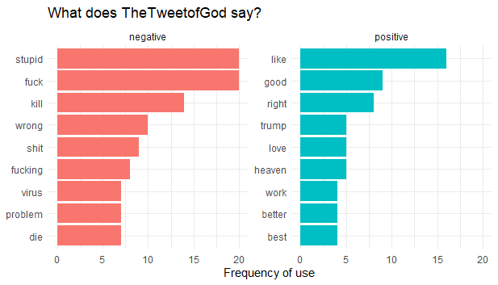
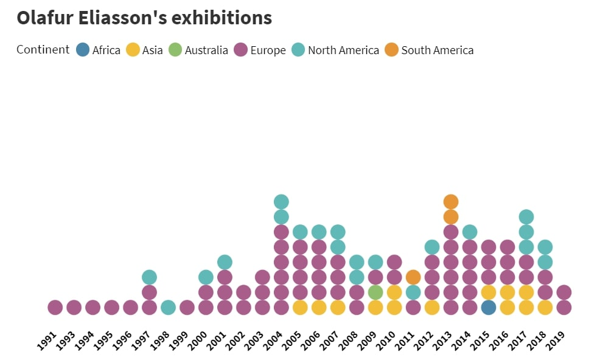

Portfolio
Data-driven projects & visualizations
Take a look at my first few data journalistic creations.

What does @TheTweetofGod say?
(Python & R)

Tourism in Sri Lanka II.
(ggplot, BBC style)

Tourism in Sri Lanka I.
(Flourish)

Olafur Eliasson: An artistic journey ‘round the world
(Flourish)

Czechs on holiday
(Tableau, CZ)
Feature stories
Travel in time and space with features I wrote for The Echelon, a Sri Lankan business magazine, at the turn of 2017 and 2018.

Women's empowerment as a sustainable business strategy

Why values matter and how to nurture them in business

Women and work: Why so few?

Who is the South Asian entrepreneur?

Private sector as a development partner

AI: Travel industry's second wave of disruption